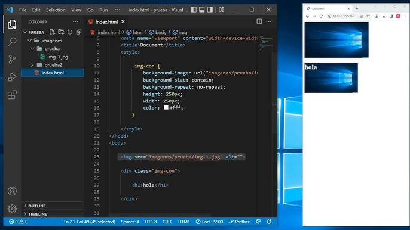
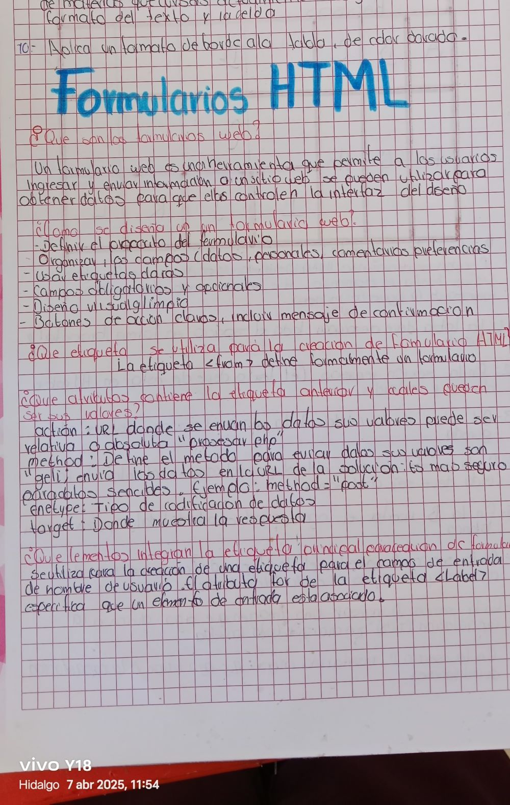
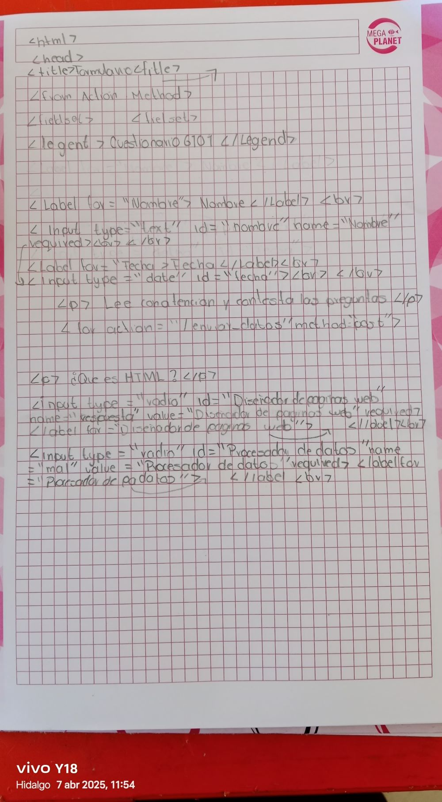
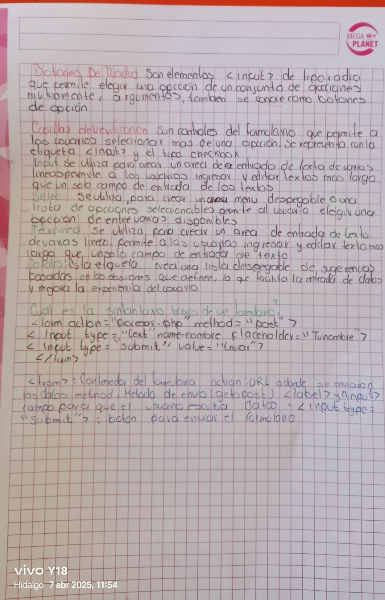
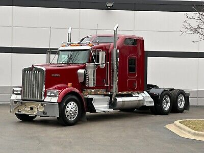

SUBMODULO 2:HOJA DE CALCULO
Emplea la hoja de cálculo con funciones avanzadas, tablas dinámicas y/o macros, para resolver problemas de manera consciente y responsable de su entorno laboral y académico.
SUBMODULO 3:DESARROLLO Y CARACTERISTICAS DE DOCUMENTOS ELECTRONICOS
Emplea las presentaciones electrónicas para expresarse creativamente.
SUBMODULO 4:COMUNIDADES VIRTUALES
Define diferentes tipos de redes y comunidades virtuales, tanto personales, laborales y escolares, para el intercambio de información y archivos multimedia en el ámbito laboral profesional de manera ética y responsable.

SUBMODULO 5:MANTENIMIENTO Y REDES DE COMPUTO
Propone las características del equipo de cómputo, que satisfacen las necesidades de diferentes usuarios al emplear diversas configuraciones para un óptimo funcionamiento en el ámbito educativo, laboral y profesional, de forma innovadora y responsable.
SUBMODULO 6:SISTEMA DE INFORMACION
Utiliza la metodología para el desarrollo de software, favoreciendo el trabajo colaborativo y creativo en la resolución de problemas de su contexto.

SUBMODULO 7:PROGRAMACION
Plantea el uso de diagramas de flujo y algoritmos, fomentando su desarrollo creativo, para solucionar problemas cotidianos de su contexto.
SUBMODULO 8:PROGRAMACION VISUAL
Crear entornos gráficos mediante el uso de códigos.

SUBMODULO 9:PAGINAS WEB
Utiliza los elementos de programación para resolver un problema.

SUBMODULO 10:DISEÑO DIGITAL
Ilustra ideas publicitarias y de comunicación a través de diseño de imágenes digitales, utilizando diferentes herramientas de las aplicaciones de software de diseño, en un ambiente responsable y creativo.
SUBMODULO 11:PROGRAMACION DE APLICACIONES DE EQUIPOS MOVILES
Identifica la diferencia entre una aplicación móvil y un programa de escritorio.
Tablas HTML Valor 20%
| |
|||||
| |
|||||
| |
| |
|
|
|
| FILOSOFIA | 4 | MTRA.HEIDI MARGARITA NERIA VAZQUEZ | |
| ECOLOGIA Y MEDIO AMBIENTE | 3 | BIOL.MODESTA CORNEJO GARCIA | |
| HISTORIA UNIVERSAL Y CONTEMPORANEA | 3 | LIC.ADRIANA ESTRADA MARTINEZ | |
| CALCULO INTEGRAL | 3 | M.M.A. ALEJANDRO GALVEZ MENDOZA | |
| DERECHO | 6 | LIC.JAVIER GARCIA MARTINEZ | |
| TEMAS SELECTOS DE INGLES II | 3 | LIC.JAVIER DELGADO MONROY | |
| TEMAS SELECTOS DE BIOLOGIA | 3 | BIOL.MODESTA CORNEJO GARCIA | |
| CAPACITACION PARA EL TRABAJO TICS | 10 | ING.ISAIAS TREJO SANCHEZ | |
| ORIENTACION PROFECIONAL | 1 | LIC.ALMA MIRIAM JUATREZ CRUZ | |
| CURRICULUM AMPLIADO PARAESCOLAR VOLEIBOL | 3 | LIC.FLORENCIO PEREZ ZUÑIGA |
Cuestionario HTML Valor 20%



Catalogo
Catalogo
KENWORTH W900
Caracteristicas
- Tipo Camión clase 8
- Carrocerías Camión (cabina con capó/convencional)
- Motor Detroit Diesel PACCAR
- Potencia 180–625 CV
- Transmisión Spicer, Fuller/Eaton Fuller, Paccar (transmisión manual o automática)
- Marca Ampro
- Modelo TR362CP
- Diámetro del rin 24.5 "
- Material Aleación de aluminio
- Ancho de la llanta
- Marca CASA DEL CLUTCH
- Tipo de Camion
- Material Hule
- Posiciones Trasero
- Número de parte 12
RINES PARA KENOWORTH W900